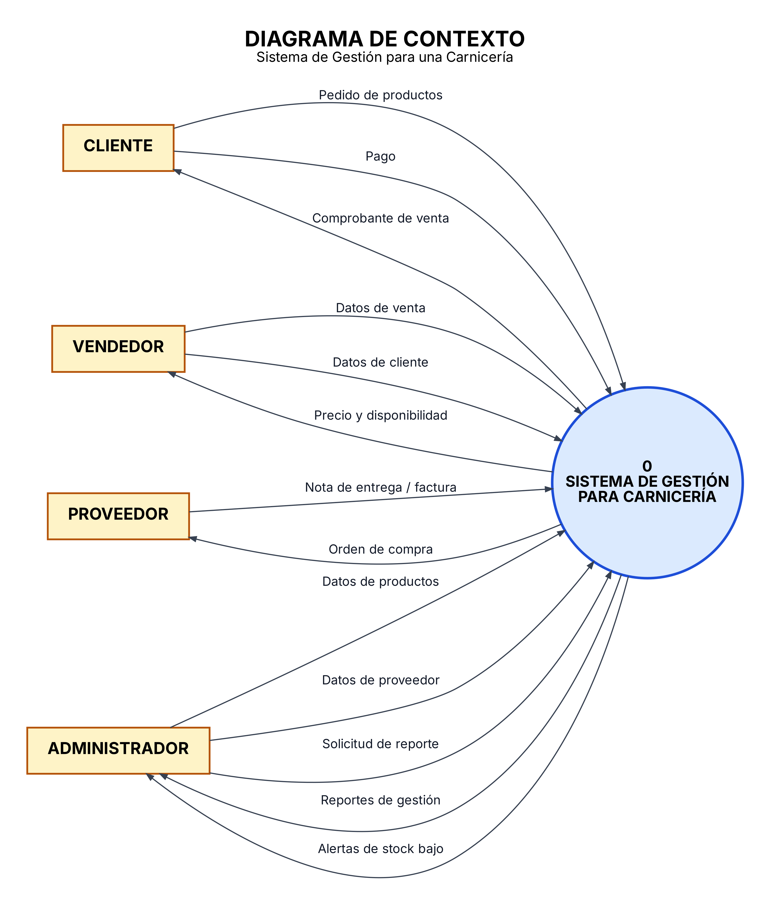
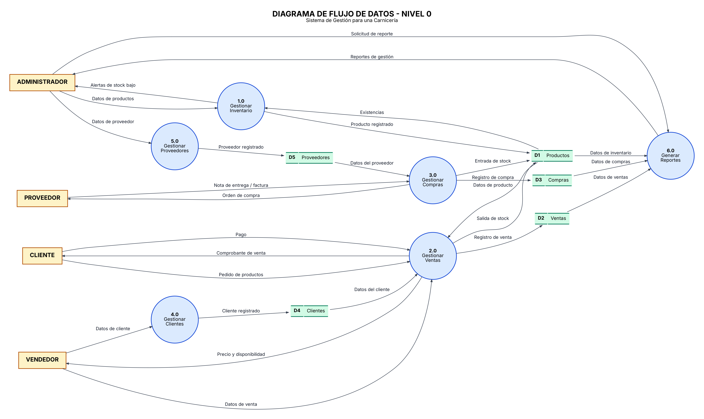
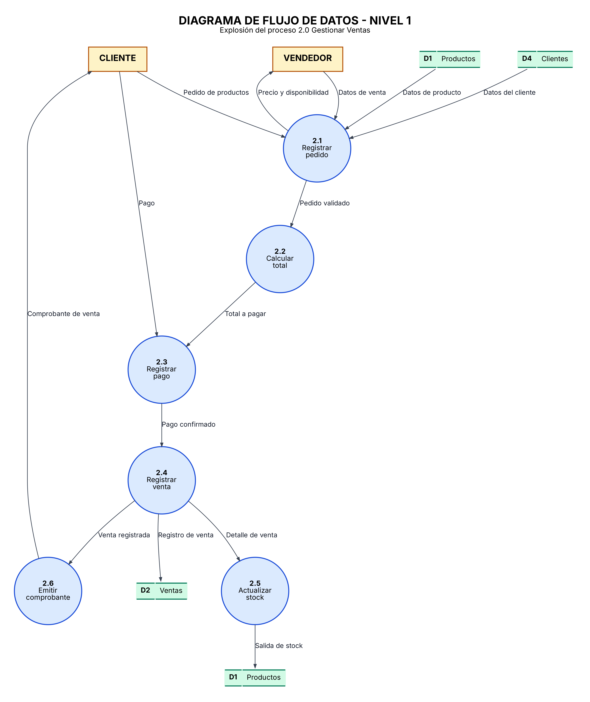
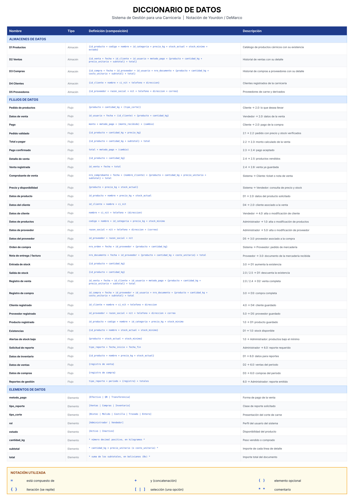
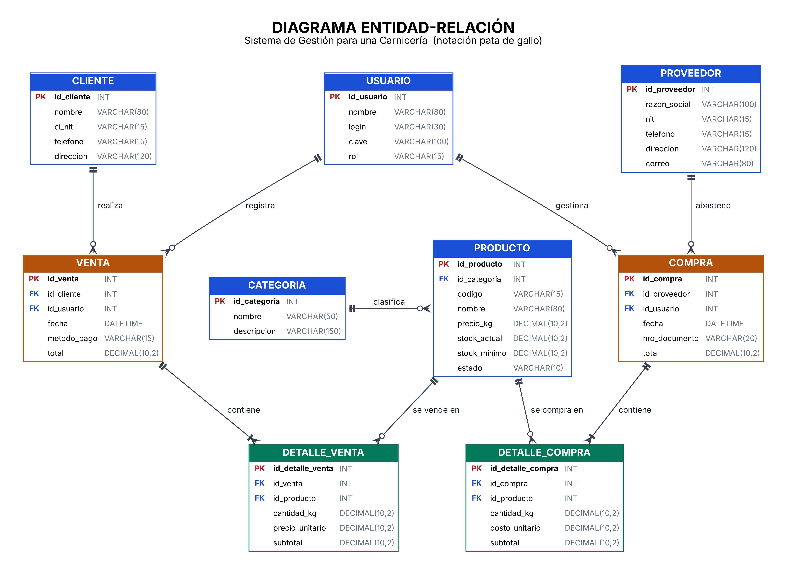

1. Introducción al análisis estructurado
El análisis estructurado estudia un sistema mediante los procesos que realiza, los datos que utiliza y el intercambio de información con entidades externas. En este proyecto se utilizan diagramas de contexto, diagramas de flujo de datos (DFD), diccionario de datos y modelo entidad-relación.
2. Descripción del sistema
El sistema web permite administrar productos, inventario, ventas, clientes y proveedores, además de consultar reportes básicos.
Entradas
- Datos de productos: nombre, categoría, precio, unidad y stock.
- Datos de clientes y proveedores.
- Productos y cantidades de cada venta.
- Actualizaciones de existencias.
Procesos
- Administración de productos y categorías.
- Control de inventario.
- Registro y cálculo de ventas.
- Gestión de clientes y proveedores.
- Generación de reportes.
Salidas
- Listado de productos y existencias.
- Resumen e historial de ventas.
- Ingresos registrados y alertas de stock bajo.
3. Diagrama de contexto
Representa el sistema como un único proceso y muestra su comunicación con el cliente, vendedor, proveedor y administrador.

4. Diagrama de flujo de datos (DFD) nivel 0
Descompone el sistema en sus procesos principales y muestra las entidades externas, almacenes y flujos generales de información.

5. Diagrama de flujo de datos (DFD) nivel 1
Amplía el detalle de los procesos internos y muestra cómo se intercambian los datos entre las actividades del sistema.

6. Diccionario de datos
Documenta los elementos de información, sus nombres, tipos y descripciones para mantener uniformidad en el diseño y la programación.

7. Diagrama entidad-relación
Muestra las entidades principales, sus atributos y las relaciones que organizan la información del negocio.

8. Especificación de procesos
Registrar producto
- El administrador ingresa al módulo de productos.
- Introduce nombre, categoría, precio, unidad y stock inicial.
- El sistema valida los datos obligatorios.
- El producto queda registrado y aparece en el listado.
Registrar venta
- El vendedor selecciona al cliente o indica una venta ocasional.
- Selecciona productos y cantidades.
- El sistema verifica que exista stock suficiente.
- Calcula los subtotales y el total.
- Al confirmar, registra la venta y descuenta las cantidades del inventario.
Actualizar inventario
- El administrador busca el producto y consulta su stock.
- Introduce la cantidad actualizada.
- El sistema valida y guarda el cambio.